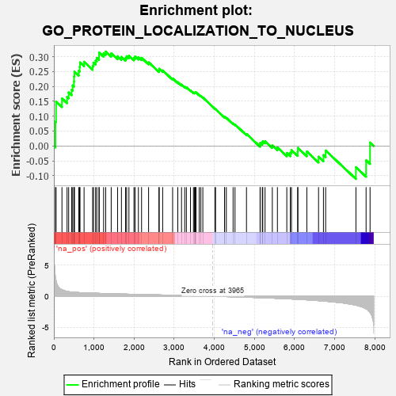
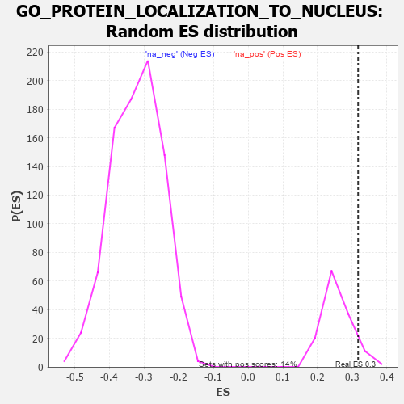

| | | Dataset | 7d |
| Phenotype | NoPhenotypeAvailable |
| Upregulated in class | na_pos |
| GeneSet | GO_PROTEIN_LOCALIZATION_TO_NUCLEUS |
| Enrichment Score (ES) | 0.31712177 |
| Normalized Enrichment Score (NES) | 1.2293547 |
| Nominal p-value | 0.08759124 |
| FDR q-value | 0.4610452 |
| FWER p-Value | 1.0 |
Table: GSEA Results Summary

Fig 1: Enrichment plot: GO_PROTEIN_LOCALIZATION_TO_NUCLEUS
Profile of the Running ES Score & Positions of GeneSet Members on the Rank Ordered List
| PROBE | GENE SYMBOL | GENE_TITLE | RANK IN GENE LIST | RANK METRIC SCORE | RUNNING ES | CORE ENRICHMENT | | 1 | SIX2 | | | 40 | 3.152 | 0.0814 | Yes |
| 2 | DCLK1 | | | 55 | 2.532 | 0.1491 | Yes |
| 3 | BCL3 | | | 202 | 1.047 | 0.1594 | Yes |
| 4 | NUP85 | | | 329 | 0.772 | 0.1646 | Yes |
| 5 | LARP7 | | | 369 | 0.731 | 0.1797 | Yes |
| 6 | SUFU | | | 443 | 0.665 | 0.1887 | Yes |
| 7 | WRN | | | 469 | 0.649 | 0.2034 | Yes |
| 8 | NXT2 | | | 502 | 0.628 | 0.2165 | Yes |
| 9 | NUP54 | | | 505 | 0.627 | 0.2335 | Yes |
| 10 | NMD3 | | | 513 | 0.625 | 0.2498 | Yes |
| 11 | TAF8 | | | 622 | 0.587 | 0.2522 | Yes |
| 12 | PLRG1 | | | 644 | 0.579 | 0.2654 | Yes |
| 13 | TNPO3 | | | 651 | 0.576 | 0.2805 | Yes |
| 14 | SUMO3 | | | 753 | 0.544 | 0.2826 | Yes |
| 15 | ZPR1 | | | 967 | 0.491 | 0.2691 | Yes |
| 16 | TAF3 | | | 988 | 0.486 | 0.2799 | Yes |
| 17 | AKT1 | | | 1040 | 0.476 | 0.2865 | Yes |
| 18 | XPA | | | 1070 | 0.469 | 0.2957 | Yes |
| 19 | NUP93 | | | 1127 | 0.459 | 0.3012 | Yes |
| 20 | SRC | | | 1128 | 0.459 | 0.3137 | Yes |
| 21 | KAT7 | | | 1240 | 0.440 | 0.3118 | Yes |
| 22 | DKC1 | | | 1292 | 0.431 | 0.3171 | Yes |
| 23 | NUP88 | | | 1429 | 0.404 | 0.3110 | No |
| 24 | PAF1 | | | 1588 | 0.376 | 0.3013 | No |
| 25 | TNPO1 | | | 1684 | 0.359 | 0.2991 | No |
| 26 | NUP58 | | | 1787 | 0.340 | 0.2955 | No |
| 27 | RPF2 | | | 1814 | 0.335 | 0.3014 | No |
| 28 | NUP62 | | | 1871 | 0.324 | 0.3032 | No |
| 29 | MCRS1 | | | 1996 | 0.305 | 0.2959 | No |
| 30 | DMAP1 | | | 2025 | 0.301 | 0.3006 | No |
| 31 | BMP7 | | | 2107 | 0.290 | 0.2983 | No |
| 32 | SYK | | | 2186 | 0.278 | 0.2960 | No |
| 33 | SIN3A | | | 2361 | 0.251 | 0.2809 | No |
| 34 | BAG3 | | | 2620 | 0.209 | 0.2539 | No |
| 35 | NUP50 | | | 2625 | 0.209 | 0.2592 | No |
| 36 | PHB2 | | | 2712 | 0.197 | 0.2537 | No |
| 37 | XPO1 | | | 2960 | 0.156 | 0.2267 | No |
| 38 | CHP1 | | | 3089 | 0.138 | 0.2142 | No |
| 39 | RBM22 | | | 3182 | 0.125 | 0.2060 | No |
| 40 | NUP98 | | | 3261 | 0.112 | 0.1992 | No |
| 41 | SMAD3 | | | 3303 | 0.105 | 0.1969 | No |
| 42 | MED1 | | | 3405 | 0.089 | 0.1865 | No |
| 43 | CDK5 | | | 3480 | 0.080 | 0.1793 | No |
| 44 | UFM1 | | | 3506 | 0.077 | 0.1783 | No |
| 45 | UBR5 | | | 3518 | 0.074 | 0.1789 | No |
| 46 | HDAC3 | | | 3528 | 0.072 | 0.1798 | No |
| 47 | PIN1 | | | 3543 | 0.069 | 0.1799 | No |
| 48 | NOLC1 | | | 3623 | 0.056 | 0.1714 | No |
| 49 | SKP1 | | | 3663 | 0.049 | 0.1678 | No |
| 50 | NF1 | | | 3713 | 0.040 | 0.1627 | No |
| 51 | PARP1 | | | 4014 | -0.010 | 0.1250 | No |
| 52 | TOR1A | | | 4030 | -0.013 | 0.1234 | No |
| 53 | ARL2 | | | 4254 | -0.050 | 0.0966 | No |
| 54 | RRS1 | | | 4256 | -0.051 | 0.0978 | No |
| 55 | RAN | | | 4299 | -0.059 | 0.0942 | No |
| 56 | LRRK2 | | | 4467 | -0.087 | 0.0754 | No |
| 57 | PINX1 | | | 4515 | -0.097 | 0.0721 | No |
| 58 | TERT | | | 4801 | -0.157 | 0.0403 | No |
| 59 | FLCN | | | 5140 | -0.235 | 0.0039 | No |
| 60 | IPO7 | | | 5142 | -0.236 | 0.0103 | No |
| 61 | SMO | | | 5195 | -0.247 | 0.0105 | No |
| 62 | IPO5 | | | 5207 | -0.248 | 0.0159 | No |
| 63 | CDK1 | | | 5264 | -0.262 | 0.0160 | No |
| 64 | CBLB | | | 5445 | -0.306 | 0.0016 | No |
| 65 | NVL | | | 5572 | -0.338 | -0.0051 | No |
| 66 | BBS4 | | | 5806 | -0.407 | -0.0234 | No |
| 67 | SUN2 | | | 5893 | -0.433 | -0.0225 | No |
| 68 | STK11 | | | 5922 | -0.443 | -0.0139 | No |
| 69 | CALR | | | 6077 | -0.499 | -0.0197 | No |
| 70 | PLK1 | | | 6082 | -0.500 | -0.0065 | No |
| 71 | DCLK3 | | | 6305 | -0.578 | -0.0187 | No |
| 72 | TPR | | | 6597 | -0.709 | -0.0361 | No |
| 73 | GSK3B | | | 6719 | -0.768 | -0.0304 | No |
| 74 | NXT1 | | | 6774 | -0.797 | -0.0154 | No |
| 75 | DCLK2 | | | 7529 | -1.439 | -0.0714 | No |
| 76 | SYNE1 | | | 7782 | -2.011 | -0.0481 | No |
| 77 | FYN | | | 7881 | -2.622 | 0.0114 | No |
Table: GSEA details [plain text format]

Fig 2: GO_PROTEIN_LOCALIZATION_TO_NUCLEUS: Random ES distribution
Gene set null distribution of ES for GO_PROTEIN_LOCALIZATION_TO_NUCLEUS